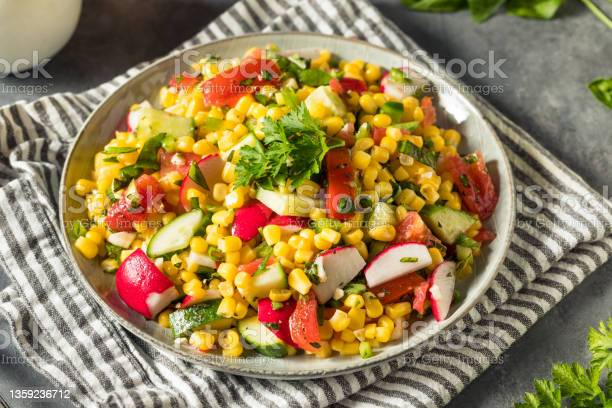

Back
Zesty Southwest Corn Salad

Description
Easy and delicious, this salad is refreshing with your summer grilled dishes.
Ingredients
- 2 (16oz) packages frozen corn, thawed and drained
- 1 1/2 cups cherry tomatoes halved
- 1/2 cup diced green bell pepper
- 1/3 cup diced red onion
- 1/4 cup olive oil
- 3 tbsp freshly chopped cilantro
- 2 tbsp red wine vinegar
- 2 tbsp fresh lime juice
- 1 tsp chili powder
- 1 tsp ground cumin
- 1 tsp garlic powder
- 1/2 tsp cayenne pepper
Directions
- Combine corn, tomatoes, bell pepper, and onion in a large bowl.
- Whisk olive oil, cilantro, vinegar, lime juice, chili powder, cumin, garlic powder, and cayenne together in a small bowl. Add dressing to corn mixture just before serving and toss well.